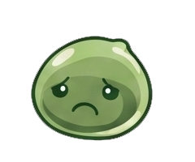

orange · default
Eight frames from row 2 of resources/poring-sheet-orange.webp
(happy/idle) and resources/poring-sheet-green.webp (sad), each
re-centered into uniform 240×200 cells with the same baked-in bounce
(frames 1-3 squish, frame 7 peaks at -24px, frames 6 & 8 flank at -16px).
Plays at 12 fps in a 667 ms loop.
The actual UI uses this. .poring.sad swaps the strip URL to
the green sprite while preserving the exact same animation and bounce —
only the background image changes.
Hover over any cell to play the animation.
For docs, slack, or any portable use. Both sprites available in three formats; choose by playback target.

The real UI maintains the state in the backend and sends it on every frame. This demo lets you trigger transitions manually so you can verify each one reads correctly.